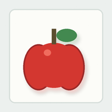

Phase 20.4: 本地对话工作台修复
这页给非技术读者看: 这次不是证明 AP 已经完整会聊天,而是证明工作台现在能清楚展示 AP 的输入、回复、教学、tick 回放和记忆内容,并且主聊天路径统一走 Phase20 共现学习底座。
这次修了什么
1
发送文字和发送图文都走同一个 Phase20 runtime,不再一半旧聊天、一半新教学。
2
当前会话直接显示用户原文；SQLite 仍只保存 hash/长度,不保存普通用户原文。
3
教学不会覆盖聊天泡泡,而是追加“纠正回答已学习”。
4
记忆列表显示真实短句和共现关系,支持记忆包查看/卸载。
示例对话
你好
嗯,在。
纠正回答 "你好。" 已学习
这是什么

...嗯。
纠正回答 "像苹果。" 已学习
这是什么
像苹果。
你是谁?
嗯,听着。
AP 输出过程
| tick | 阶段 | 做了什么 | 细节 |
|---|---|---|---|
| 1 | 输入进入 | 收到当前会话输入 4 字 + 图片 | 原文只用于当前页面显示；普通用户文本仍按隐私规则只持久化 hash/长度。 |
| 2 | 视觉聚焦 | 枚举到 1 个 ObjectFile | 图像路径只进入视觉感受器；文本通道不偷读视觉标签。 |
| 3 | 文本运行时 | 底层 tick 3 产生候选表达 | 文本 hash=ac0b06818ee571fb |
| 4 | 共现召回 | 命中教师共现记忆 | teacher_phrase::3ddb8788eb9fa937 |
| 5 | 风格组装 | PAR-Q.06 -> 像苹果。 | 风格化只负责表达外形，不作为独立答案表。 |
| 6 | 提交回复 | 像苹果。 | 提交后进入空 tick 观察窗口，用于展示是否仍有未完成压力。 |
| 7 | 空 tick 1 | 无新输入，保持最近工作记忆并等待下一轮。 | Phase 20.4 只展示空 tick 投影，不宣称额外深层推理已完成。 |
| 8 | 空 tick 2 | 无新输入，保持最近工作记忆并等待下一轮。 | Phase 20.4 只展示空 tick 投影，不宣称额外深层推理已完成。 |
可读记忆
- 对话场景 815bd083 ↔ 教师短句「像苹果。」phase20ctx::720c049a815bd083 / teacher_phrase::3ddb8788eb9fa937 · support 1.000
- 视觉对象 3568d3d2 ↔ 教师短句「像苹果。」visual_object::730d7f6a068603dd3568d3d2 / teacher_phrase::3ddb8788eb9fa937 · support 1.000
- 视觉概念 c_95098696ad7469f70c4cd77d ↔ 教师短句「像苹果。」visual_concept::c_95098696ad7469f70c4cd77d / teacher_phrase::3ddb8788eb9fa937 · support 1.000
- 教师短句「像苹果。」教师纠正短句 · support 1.000
- 对话场景 815bd083 ↔ 教师短句「像苹果。」phase20ctx::720c049a815bd083 / teacher_phrase::3ddb8788eb9fa937 · support 1.000
- 视觉对象 3568d3d2 ↔ 教师短句「像苹果。」visual_object::730d7f6a068603dd3568d3d2 / teacher_phrase::3ddb8788eb9fa937 · support 1.000
- 视觉概念 c_95098696ad7469f70c4cd77d ↔ 教师短句「像苹果。」visual_concept::c_95098696ad7469f70c4cd77d / teacher_phrase::3ddb8788eb9fa937 · support 1.000
边界
Phase 20.4 的 tick trace 是工作台从 Phase20 runtime 事件投影出来的展示序列,不是宣称已经完成更深层的开放式长程推理。音频在工作台可以上传和播放,但本阶段不宣称听觉识别完成。